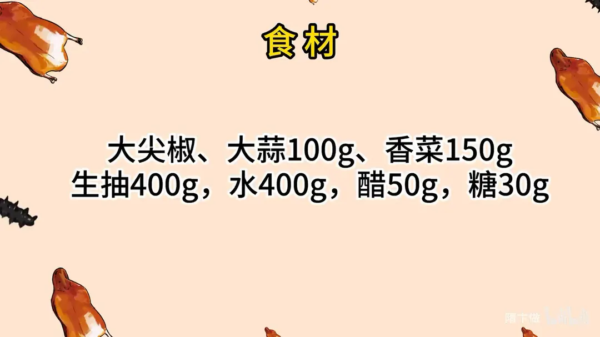
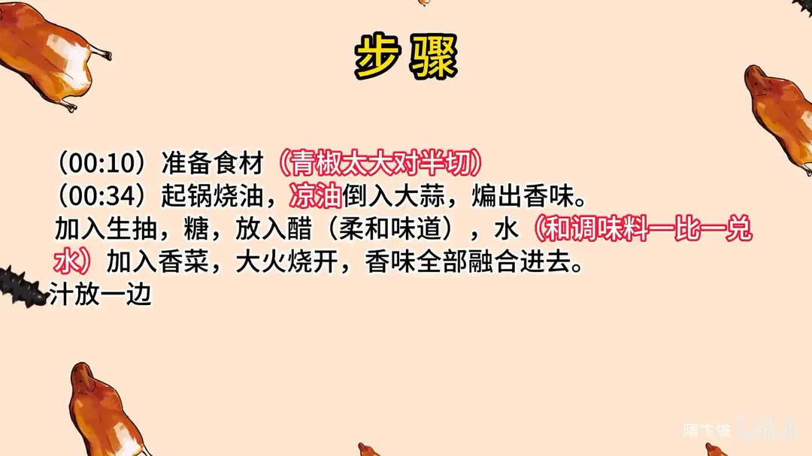
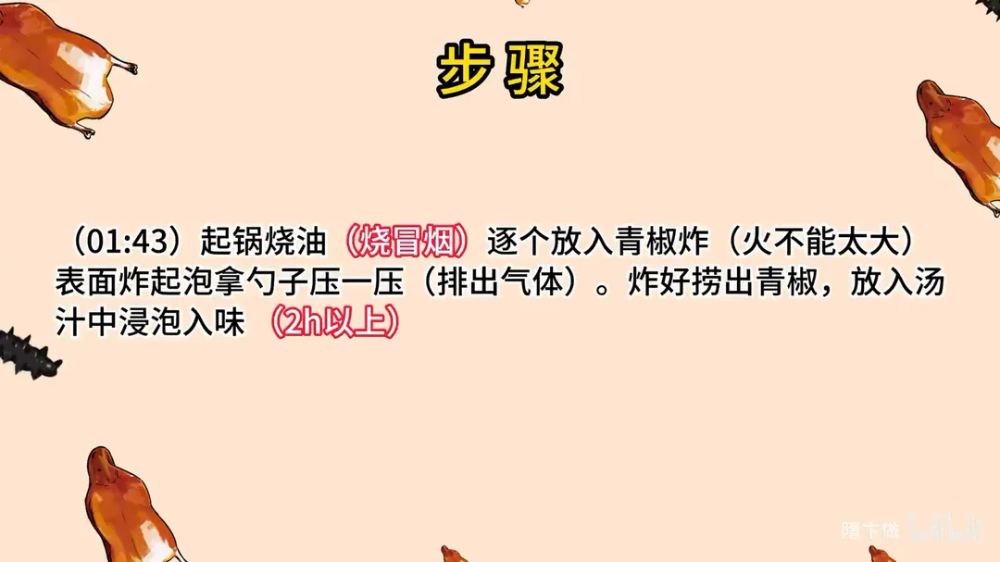

黑椒万能小菜
隋卞一做。一把大尖椒配 100g 大蒜、150g 香菜，生抽 400g、水 400g 一比一兑成汁，加 50g 醋、30g 糖烧开。青椒炸到起泡压瘪，泡汁 2 小时以上，酸辣咸香，拌饭拌面都行。
原视频：https://www.bilibili.com/video/BV1ow411k7qt
食材
大尖椒、大蒜、香菜 等 7 样
| 类别 | 用料 | 用量 |
|---|---|---|
| 主料 | 大尖椒 | 适量 |
| 配料 | 大蒜 | 100g |
| 配料 | 香菜 | 150g |
| 调料 | 生抽 | 400g |
| 调料 | 水 | 400g |
| 调料 | 醋 | 50g |
| 调料 | 糖 | 30g |
步骤
- 备料：准备食材，青椒太大就对半切开。
- 煸蒜：起锅烧油，凉油倒入大蒜，煸出香味。
- 调汁：加入生抽、糖，放入醋（柔和味道），水按与调味料一比一兑入，再加入香菜，大火烧开，让香味全部融合进去，汁放一边备用。
- 炸青椒：另起锅烧油，油烧至冒烟，逐个放入青椒炸，火不能太大。
- 压泡：青椒表面炸起泡后，拿勺子压一压，排出气体。
- 浸泡入味：炸好捞出青椒，放入汤汁中浸泡入味，2 小时以上。
小贴士
- 水要和调味料一比一兑，汁才不会过咸。
- 醋在生抽、糖之后下，起柔和味道的作用；香菜最后下，大火烧开即可关火。
- 炸青椒时火不能太大，起泡后压一压把气体排出，泡汁才吸得进去。
讲解要点
难度：★☆☆☆☆（几乎零技巧，唯一要盯住的是炸辣椒的油温）
为什么这么做
- 先煸蒜，再下生抽：蒜在油里煸出香，生抽下去才带蒜香；蒜不煸，出来就是生酱油味。
- 糖只放一点：糖不是为甜，是用来圆味、压咸、提鲜，放多了就成了糖醋汁。
- 醋的作用是「柔和味道」：少量醋让咸味不尖锐，吃着「好像有点酸又说不清」，这才是配比的关键。
- 香菜最后下、烧开就关火：香菜是香气菜，久煮会发黄发苦。
- 不放盐、不放味精：生抽本身够咸，配料表里也含味精，再加就齁。
- 青椒炸到起泡再压瘪：起泡是表皮被高温撑开，压瘪后汤汁才灌得进去，这就是「炸虎皮」。
- 靠泡不靠煮：味道是浸泡渗进去的，急吃可小火咕嘟一下加速，不急就泡两小时以上。
容易翻车
- 油温不够就下辣椒，皮不鼓泡，泡多久也不入味。
- 油温过高，辣椒下锅就焦黑发苦。
- 汁里另外加盐，泡出来咸得没法吃。
- 香菜跟汁一起久煮，颜色发黄、香味也没了。
- 泡的时间太短，只有表面有味，里面还是生青椒味。
原片尾卡



原片文案
AI 字幕校准稿
今天教你们一个小菜。原料很简单，大尖椒，咱们家都有的，大蒜、香菜。别看它材料简单，相当相当的好吃下饭。人生就得追求简单，简单就是事半功倍的效果，俗称叫摸鱼尖椒。就这样，蒜和香菜都不用处理，活就结束了。
我们开始做，先做灵魂的一个汤汁。起锅烧油，把蒜放到油里煸一下，煸出香味。然后倒入鲜味生抽，生抽加一下，它的味道也会变得更香，吃着在这个蒜的作用下会更香。然后里边放糖，量不大，它是不甜的。
这个汁的比例很关键，不用记，回家给你们放到片尾。加水，还要放醋。这个醋是一个柔和味道的，入口之后好像有点酸味，又没有那种冲的酸，就对了。然后把香菜放进去，大火给它烧开，让蒜味和香菜味都在这个汤汁里边释放出来，很完美。
这里边完全不用放盐，也不用放味精，鲜味生抽配料表里面它是有味精的。这样就好了，倒在一个盆里边。
另起锅烧油，烧到表面快要冒烟的时候，把辣椒放进去炸，这个火不能太大。然后咱们逐个地炸，就把表面炸起泡。可以拿这个铲子、勺子压一压，起泡的地方特别容易入味。其实这也叫炸虎皮尖椒。
尖椒炸过之后放在汤里边。这个如果着急吃，咕噜咕噜煮它一下，它就入味，速度更快一点；要不着急，这样泡着也可以，怎么也得泡俩小时。
其实不光辣椒，木耳、花生、鸡蛋都可以泡，你可以放点大蒜，泡完就是个小凉菜。这个汁儿是万能的，泡上就给它放在冰箱里，十天半个月都没问题。
来吧，尝尝咱们小凉菜。辣椒里面灌着汤汁，还挺辣。我只能说这比我想象的味道好吃太多太多，因为刚才看你做的太简单了。不咸，很鲜，回味带一点点甜和一点点酸，整个复合味是很足的，但它不是那种很复杂的复合味。其实这就是你看着我放醋了，如果你不看见我放醋，你保证说这有点酸味儿。